2026-10-13 · codex/debug-grammar-v2 · 本地账号和页面证据。截图使用独立测试学生“小禾”等虚构姓名。无英语配音；五个答题区、69题、五颗星。
| 范围 | 实际结果 |
|---|---|
| 本单元页面、13轮课文、四宽与短屏 | Chromium 19项；WebKit小剧场4项通过 |
| 真实账号、权限、五星、离线复访、纪念册与GIF | Chromium／WebKit × 根目录／测试子路径，共24项通过 |
| 相邻课程与导航 | Lesson61–62／63–64共11项；33横幅与管理权限2项通过 |
合计60项独立检查通过，完成页修正后的四宽复验不重复计数。构建通过。真机微信保存、教师／儿童使用反馈待验；未提交、未推送、未部署。示范账号的作答和星星来自完整页面流程；样板并排对照另使用同姓名、同星数的测试收藏。
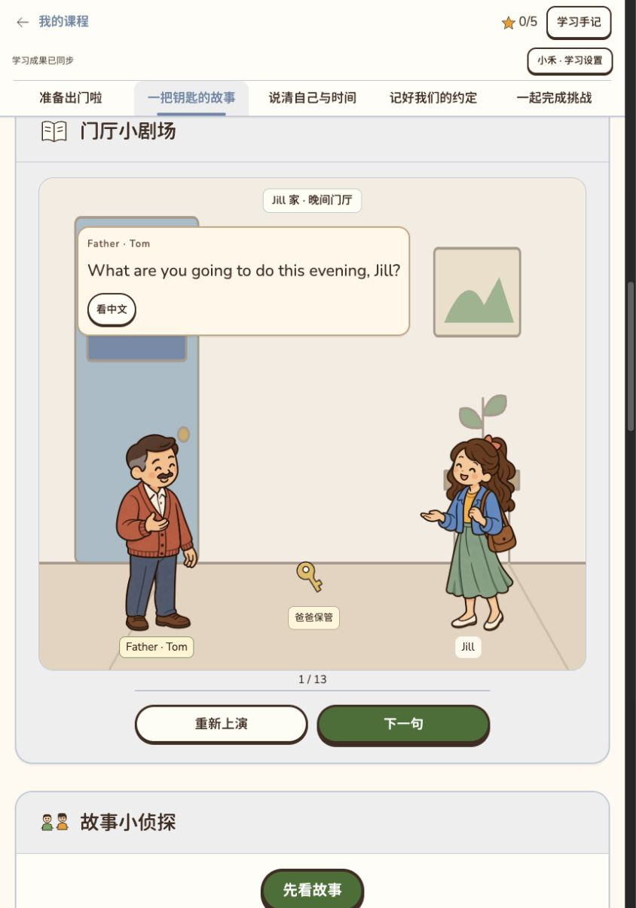
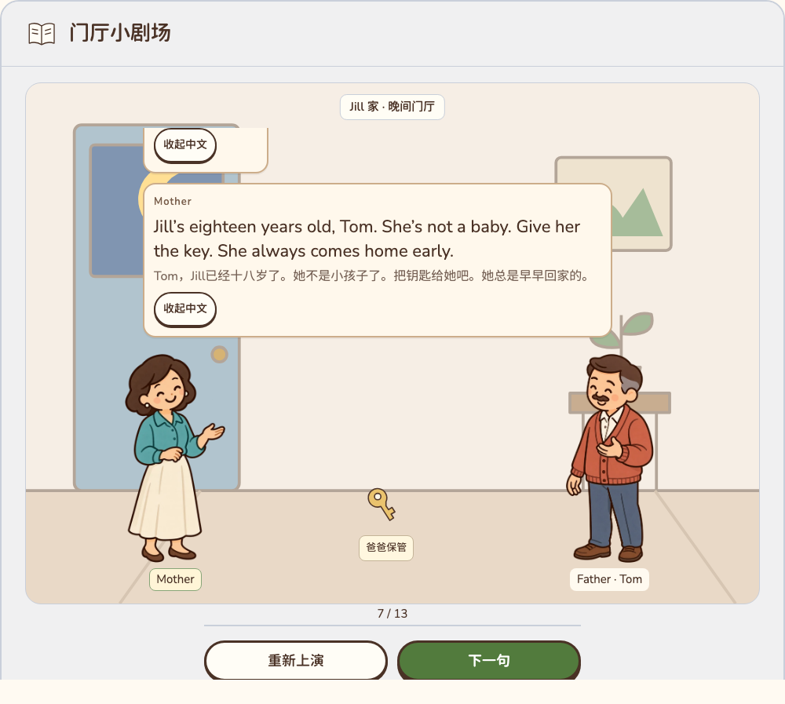
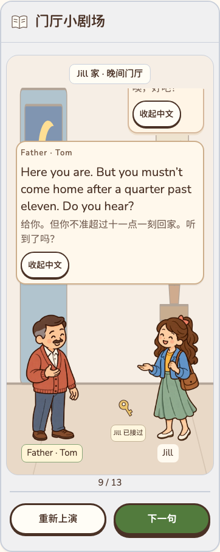
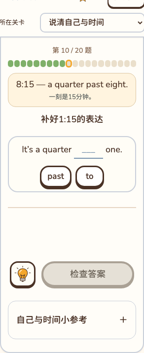
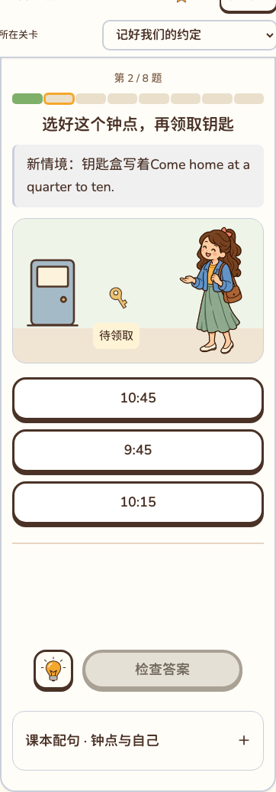
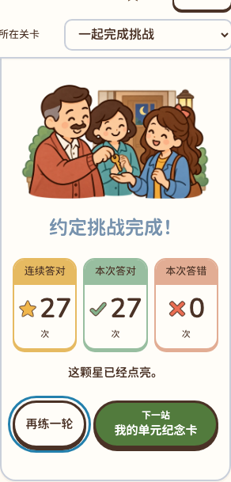
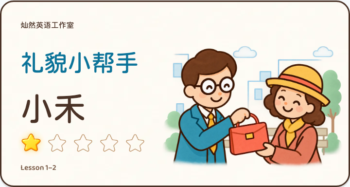
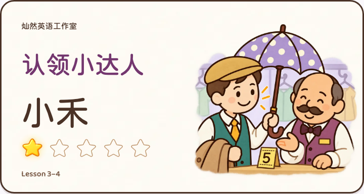
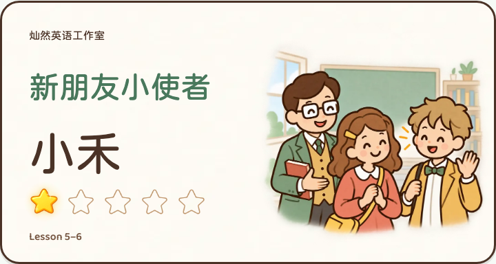
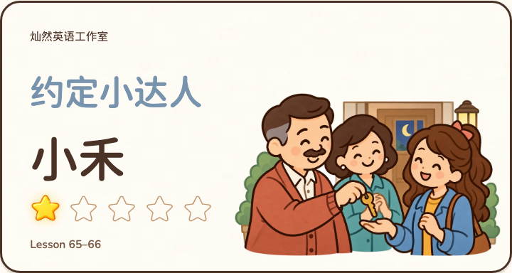
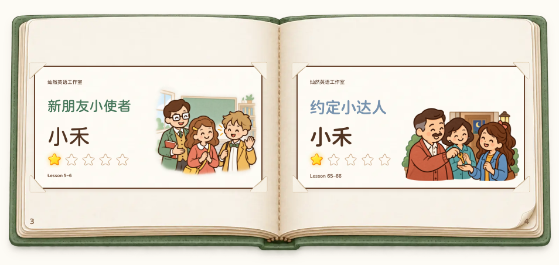
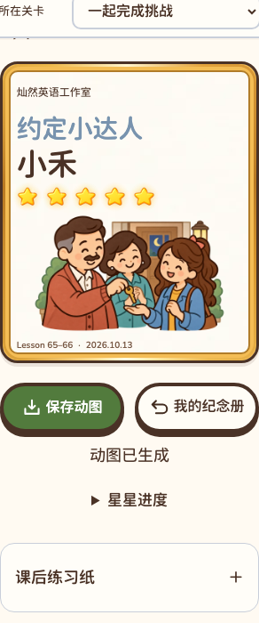
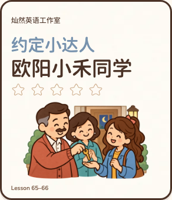
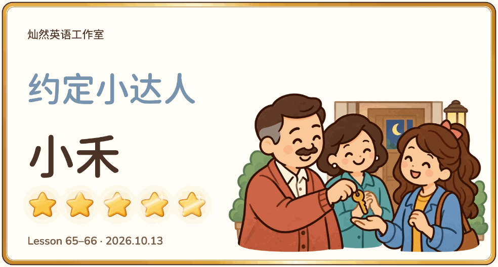